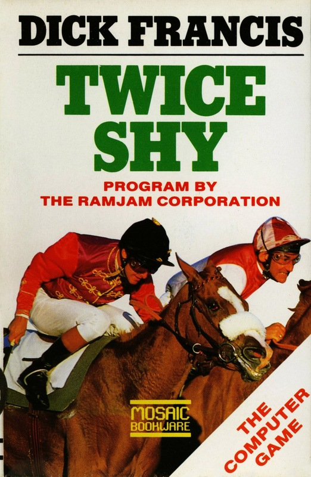
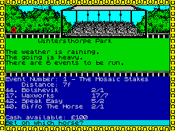

Twice Shy


{kind=link}

| Publisher: | Mosaic |
| Price: | £9.95 |
| Year: | 1986 |
| Source: | CRASH, Issue 35 |

Mosaic have a penchant for bringing out games based on books (remember Adrian Mole and The Snow Queen) and this release is no exception. Twice Shy is based on the novel of the same name by Dick Francis, a book which I must confess I have never heard of, but seeing as I only have the time to read the odd science fiction book these days, this is hardly surprising. How much reading the book will help you complete the game is not made clear but let’s assume the following storyline is based on the book.
You take the part of physics teacher Jonathan Derry who comes into possession of some intriguing computer program tapes. As you try to discover their purpose and return them to the rightful owner you attract the attention of some of the shadier figures in the horse-racing world. It seems they’ll stop at nothing to wrest the tapes from you...

Steering clear of the heavy mob, you may make it to the racecourse which is in fact a whole separate plaything located on side two of the tape. A series of successfully placed bets can see you taking a useful pile of money back into the adventure, resuming where you left off — alternatively, you might find yourself going back with a lot less than you started with. The racecourse section can be loaded whenever it is met in the adventure and, if you’re the sort who is addicted to gambling in this way, you can load the racing game on side two all by itself.
The mechanics of the adventure are most pleasing. In appearance, or perhaps more correctly in style, the game has a passing resemblance to Terrors of Trantoss, the last Ram Jam adventure release. The screen layout is imaginative and attractive, as has been the case with many of the top non-Quilled releases of the last few months. On to the picture frame: in the top half of the screen the left hand side shows the scene, while on the right is a horse racing mosaic (to remind you of the game’s main theme).
Also in the top area is the static location description text which never changes at any particular location. Changes in objects and people’s positions and behaviour are reflected in the print lower down the screen in a very tidy fashion — the character set is very nicely redesigned. The input routine is so fast and slick it appears to be as effective as Level 9’s famous type-ahead, while the vocabulary is broad and friendly. One example gives an insight into the complexities which lie behind the seemingly innocuous theme of this game: SAY TO JANE "GO NORTH AND SHUT THE DOOR".
Conversation with other characters relies on their attitude to you at the time. You can attempt to improve relationships by offering advice, offering objects or by simply being friendly. I could only find one example of unfriendliness in the whole adventure and that was partly excusable when ANSWER TELEPHONE is confused with the television and ANSWER PHONE does the trick. In general, all the indicators of a finely tuned adventure are there, including the useful GET ALL and DROP ALL, an extremely informative EXAMINE command and multiple command entry using a comma, THEN, or AND as separators on the one input.
The television and phone lie in the first location, where there is much to do and explore. You see Sarah Derry who is presumably your wife, and the telephone is ringing. Answering it, ‘Sarah takes the phone from you, puts her hand over the mouthpiece and motions you to be quiet’. That’s all the intrigue for the moment, so you busy yourself by switching on the television to watch Dallasty and examining the mantelpiece. But a little while later Sarah is in a state of shock and must go immediately to the Keithlys in Norwich — Donna has stolen someone’s baby.
Who the Keithlys are, and why this Donna person should pinch someone’s little offspring is unknown to me, and probably anyone else who hasn’t read the book. No doubt though, as in any good yarn, all will make sense in due course.
Moving upstairs to the main bedroom, quite a list of items are given you free as it were, without having to make recourse to the EXAMINE command. The bullets for an Enfield rifle rightly make you suspect you should have found such a rifle by this stage, while the canvas bag and exercise books should find some use further along the way. If you choose to, loading up the rifle is easily achieved here. There are quite a few further easy pickings upstairs, some with more obvious immediate uses than others. I’ll leave this part of the game at the point where you will no doubt pause for a while...
The other side of the tape, the horse-racing game, is a tonic to all the brainwork of the adventure side where, on the face of it, all you have to do is plonk your money on any number of four horses and see how the race goes. However, the conscientious gambler, or those who consider every pound important, may wish to study the form of the horses in each race. This being a computer game, you might expect some formula to make itself felt after a few goes, but I found it hard to spot any consistencies so I suppose in that sense, this game mimics the real thing.
I began at Wintersthorpe Park with the offer of a full racing day of six events (you must see through all the events of a day — even if you lose everything on the first race). Noticeable are the names of races and horses (many of which ring bells if you are familiar with Mosaic’s previous releases), and some strange odds, like 16 to 9, and 17 to 5, which are presumably a mathematical tease designed to have you scratching your head to work out which are the most favourable.
I liked this racing simulation a lot. The graphics are very good, showing the four horses galloping across the field with a great variety of finishes — either with a horse coming from behind to win or perhaps two horses pulling away from the field in a neck and neck finish. Many permutations are seen in a meeting. It is most intriguing to study form before or after a race, trying to analyse the relationships between the going (hard, soft, heavy and so on), the weight carried by each horse, its preferred distance, and its recent form presented in a history table. Attempting correlations with all these variables can take some time!
I think Twice Shy is ably professional product from the Mosaic team, and the Ram Jam Corps have played their part in providing a most slick and playable program. Everything about the game, from instructions to completion, is thoroughly entertaining.
COMMENTS
| Difficulty: | Easy to get into |
| Graphics: | Attractive |
| Presentation: | Very neat |
| Input facility: | Beyond verb/noun with speech |
| Response: | Type-ahead allowed in an amazingly fast routine |
| General rating: | Polished to a ‘tee’ |
| Atmosphere: | 85% |
| Vocabulary: | 91% |
| Logic: | 90% |
| Addictive quality: | 89% |
| Overall: | 89% |